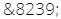

- En TAO : rechercher la fonctionnalité propre au logiciel utilisé.
- En CMS : ajouter l'espace insécable directement dans l'éditeur HTML. Le caractère HTML "espace insécable" (non-breaking space) est :

La combinaison de touches pour l'espace insécable n'est parfois pas prise en compte par certains outils de TAO et certains CMS.
- En TAO : rechercher la fonctionnalité propre au logiciel
utilisé.
- En CMS : ajouter l'espace insécable directement dans l'éditeur HTML.
Le caractère HTML "espace insécable" (non-breaking space) est :
L'espace fine insécable peut être préférée à l'espace insécable traditionnelle, en particulier pour les signes de ponctuation française à caractère double hors ":" (! ? ; % ‰ « ») et pour les nombres (chiffres regroupés par trois en général, et pour les nombres de 4 chiffres seulement, pour lesquels elle est recommandée). Mais l'espace fine insécable n'existe pas sur les claviers d'ordinateur traditionnel, seulement sur les claviers bépo. Il est possible en revanche de l'insérer directement en HTML: 
https://typefacts.com/artikel/tastaturkuerzel
https://fr.wikipedia.org/wiki/Aide:Caract%C3%A8res_sp%C3%A9ciaux_probl%C3%A9matiques Page Wikipédia sur les caractères spéciaux français et l'usage de l'espace insécable (laisser de côté les consignes de formatage via les {{modèles}} destinés à la rédaction sur Wikipédia, le reste est utile.)
https://fr.wikipedia.org/wiki/Espace_fine_ins%C3%A9cable https://fr.wikipedia.org/wiki/Pour_mille Wikipédia à propos de quand utiliser le signe "‰" Voir aussi : textes et images,
Retour au menu